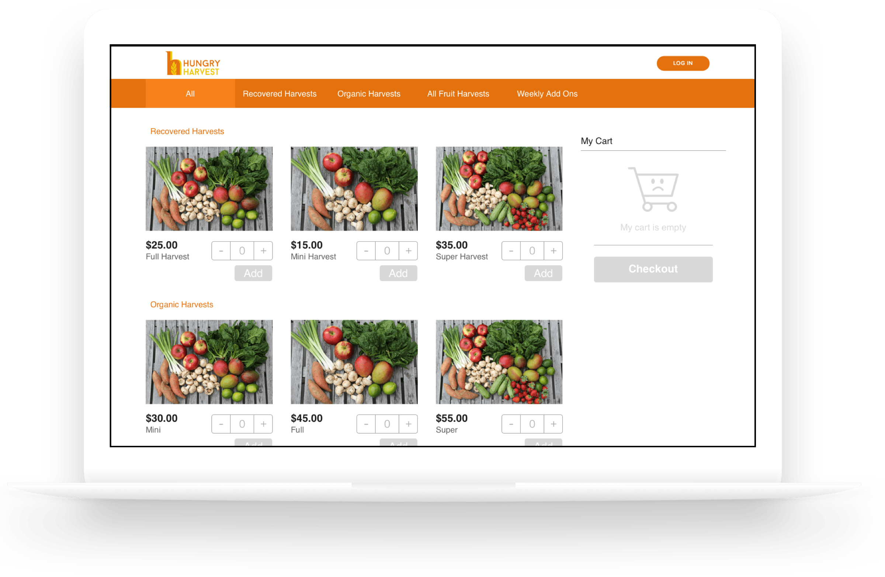
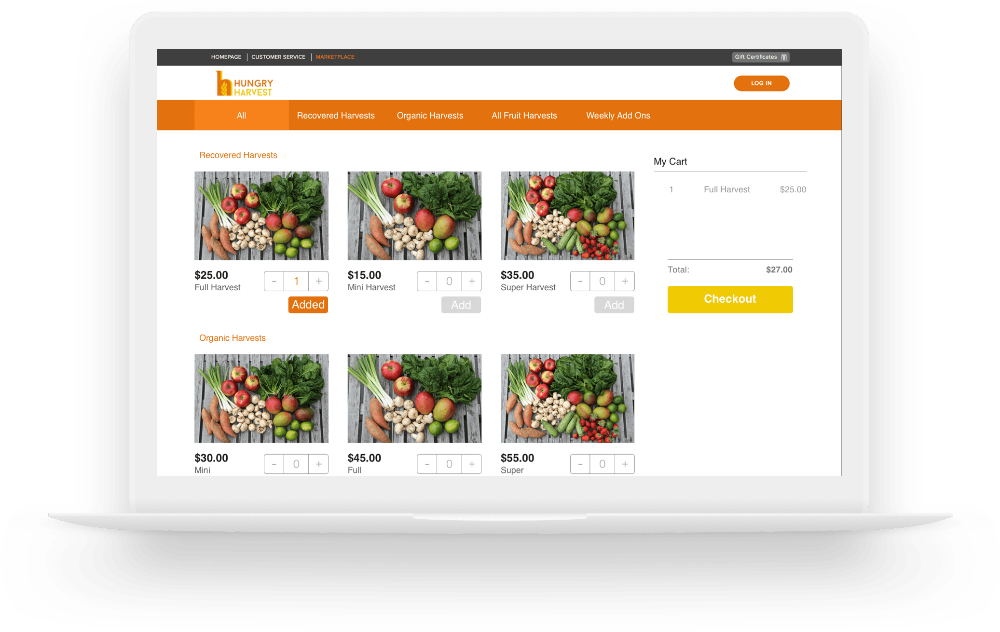

Shopping Page Redesign
One of my projects was to redesign the customer shopping page in order to increase sales. The original interface did not have any visual representation of what was in the customer's shopping cart. This was problematic because it lead to confusion as to what they were ordering. Also, adding items to their cart took 3 clicks. This provided unnecessary barriers for the customer to order their items.
I believed that making the ordering process for the customer as fast and seamless as possible would be the key to increasing sales. After a lot of meetings and sketches with the team, we finalized on the design for the page.
Shopping page with empty cart

Shopping page with item in cart
How We Work Video
I created this video to visually showcase how Hungry Harvest works. All illustration and animation was done by me
The goal of this video was to promote the company and their mission on social media, ultimately attracting new customers.
Key Takeaways
My experience here has helped me realize what it means to fight for what you believe in. I had the opportunity to work with an amazing group of people that truly believe in eliminating food waste and fighting hunger. As a result of my internship, there was a 15.2% increase in new customers and a 10% increase in revenue. I am really proud of this as I have helped the company move one step closer to accomplishing their mission.